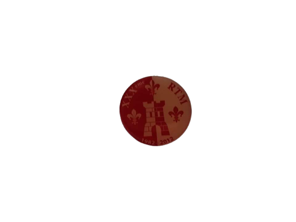

La Binchoise
Témoignage de Dario Mangano
Quand je suis arrivé à Namur, La calotte n’en était qu’à sa 6ème génération. Il n’était pas rare à l’époque de croiser les fondateurs de la calotte, des différentes régionales, du CIR et de St Aubain... Une Belle époque où le bunker fermait à 6h du matin. Notre quartier général était le Petit Bitu 1, qui était situé à l’endroit de l’actuel Monde à l’envers.
Venant de Binche, je me suis tout naturellement inscrit à la Carolo. J’en suis devenu le Scriba l’année suivante et était sur la bonne voie pour en prendre la présidence. A l’époque, à la RTM, il y avait un gars (SMAX) qui y chantait le chant de la Mouscronnoise, juste après celui de la RTM. J’ai suivi son exemple et me suis mis à chanter le chant de la Binchoise, après celui de la Carolo Comme tout le monde adorait ça, on m’a laissé faire. Et l’idée a peu à peu germé dans ma tête de créer un régionale Binchoise.
J’ai donc commencé à faire des tracts, distribués dans les auditoires, et fait quelques réunions informelles qui ont attiré plein de Binchois, non baptisés. Ensuite, j’ai écrit une charte et une Constitution, et suis allé voir le CIR, qui a été très réticent à la création d’une nouvelle régionale. Ça faisait déjà quelques années que ça ne s’était plus fait. A force de demandes répétées, ils ont fini par accepter. La régionale était née !
Mais je ne me sentais pas Président, puisque je n’avais pas eu de passation ! J’ai donc fait venir le comité Binchois de LLN et un ancien Carolo, venant de Binche (Bertrand Hanaide), qui en son temps avait déjà essayé, sans succès de créer un Binchoise de Namur. On a fait une Passation d’enfer, dans le Bunker, tellement il y avait du monde, présidée par Bertrand Hamaide avec le praesidium de la Binchoise de LLN. Et voilà j’étais «Légalement» en fonction..
Repris du Syllabus de Calotte Binchoise
La Binchoise de Namur a été créée en septembre 1985 par Frédéric Dessart, Philippe Dehon et Bertrand Hamaide. (...) Elle n’a malheureusement pas tenu au départ de Bertrand Hamaide qui quitta les FUNDP en 1988.
Il s’agit donc de la deuxième Binchoise sur le site de Namur. Cette particularité est symbolisée par le Gille remplaçant le « i » de « Binche » sur les calottes.
Syllabus de Calotte Binchoise 2011-2012


L’Ordre du Grelot
L’Ordre du Grelot a pour but de récompenser une personne qui, de par ses actes, s’est nettement distinguée des autres dans la perpétuation ou la promotion du folklore binchois sur le site namurois.
Le vlek interne est caractérisé par une bande jaune et bleue placée à l’avant gauche de la calotte, surmontée d’un grelot doré.
Celui-ci est proposé par un Grand-Maitre avec le consensus de ses pairs. (...)
Le vlek externe se distingue d’une bande jaune et bleue placée à l’avant gauche de la calotte, surmontée d’un grelot de bronze.
Celui-ci est proposé par le comité faisant fonction, les Grands-maîtres votants ensuite entre eux.
Les Grands-Maitres portent le grelot doré, avec un laurier doré sur la bande jaune et bleue. (...)
Le titre de Grand Maître ad vitam aeternam est uniquement réservé à Dario MANGANO, fondateur, et à lui seul.
Statuts Régionale Binchoise de Namur 2012-2013


 |
 |
 |
 |
 |
 |  |